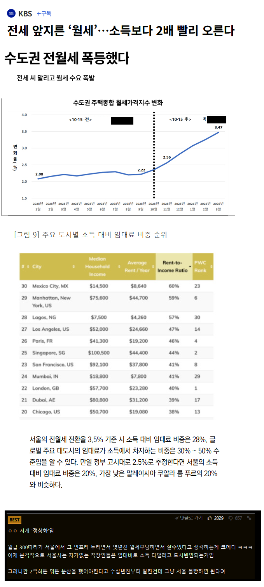

ㅇㄱㅈㅉ?

ㅇㄱㅈㅉ?
돈 없으면 배드타운으로 꺼지는게 맞지
내 예상
반지하도 월세가 150만원이 된다?
한국은 차량 유지비가 선진국에 비해 극도로 낮음
차고지도 필요없음
pv5나 레이같은 차에서 숙박하는 인원들이 많아질것
씻는건 공원 화장실 먹는건 한강공원 치킨 라면 먹다버린거 먹고
공영주차장이나 주차허용되는 모든곳에 알박기하고
저런 홈리스들 폭증
-> 범죄율 증가
퇴마전설을 알 나이인데 이런 망상을??
ㅋㅋㅋㅋㅋㅋㅋㅋㅋㅋ이번주 젤 크게 웃었네
음 난 가능성이 있다고 보긴함. 근데 당장은 없고 30년 40년쯤 되야 생길거같긴함
그때쯤이면 중국한테 먹혔을수도 있고 지금 상황만 볼때 ㅋㅋ
한국인은 1일 1-2샤워하는 민족이라 차에서 숙식하는 생활 길게 못함 이새끼야
존티토
다른 나라 그런 거 알겠는데 우리는 웬 씨발놈이 손 대기전에는 저렴했다는 거지 ㅋㅋ 안좋은 거까지 따라갈 필요 있나?
그동안 전세로 펌핑된 집값이 내려간다면?그럼 월세 상승이 그렇게 크지 않을텐데 과연
아직도 이런생각을 하는애들이 있네 ㅋㅋㅋㅋ
누구나 다 서울 살고싶어했고
누구나 다 인정할만한 매력적인 도시였으면
월세 폭등은 늦든 빠르든 올 결과였을듯
런던 뉴욕 도쿄 다 비싸잖아
임대도 사업인데 최소한 금리보다는 수익율 높아야 하잖아?
금리대비 최저 수익으로 5%잡을때 11억짜리면 년 5500임 보증금 1억빼면 년5000만원
월 450만원씩 받아야 함 거기서 소득세,재산세,건보,종부세,관리비용 빼면 임대인수익율은 3%대나옴
서울에서 11억짜리면 국평기준 하위 2~30% 썩다리아파트임
즉 아직 갈길 멀었다는 얘기
6년전에 전세끼고 서울집 사놧는데
실거래가 많이 올랏더라 거의 10억 오름
내년에 갱신인데 반전세로 돌릴라고
세금도 내야되니께~
청년임대/부부임대 공급해주시겠다잖아~
(둘다해당안됨ㅋ)
다큐보니 미국도 구글 이런데 다니는 고연봉자들이 노숙하고 차에서 생활하는 사람들 있던데 이상할건 없을듯...
북미 인구 50만 소도시. 투베드룸 월세 260만원, 원베드룸 월세 210만원. 원룸 150만원. 반지하 혹은 쉐어하우스 100만원.
1시간 거리에 있는 인구 300만 대도시로 가면 곱하기 1.5하면 됨.
서울도 가즈아~!!
엄마랑 살면 그만이야~ 씨빨ㅋ
요즘 집값 ㅈㄴ올라서그런거아닌가
부동산 좀 관심있는 사람들은 다 알겠지만 월세 1년분(12회분)은 집값의 5%에 수렴함..
오른집값만큼 월세오르는건데 요즘 집값 전반적으로 ㅈㄴ올라서 그럴걸
집값 대비 월세 퍼센테이지로 보면 비슷할거임..
전세없어진거랑 집값폭등은 걍 정책이 주요한 역할을 햇고
세세하게 가면 ㅇㄱㄸ라 요기까지만..
ㅇㄱㄸ 기준을 모르겟네 뉴비라 요정도만 적으면 안걸릴라나
글고 본문 하단 표는 소득대비인데 소득대비로 보면 안되고 집값대비로 봐야되지않나..?
집값오른거랑 수렴하는건데
전국의 인프라,인력,자원,기업들을 원기옥처럼 모아놓은 동네가 서울이니까 뭐ㅠ 이제 진짜 차에서 먹고자고하는 홈리스들 생기려나
저걸보고 정상화라고 좋아하는애들은
사회양극화를 옹호하는 부류=
공산주의자(극좌) 혹은 극우이거나
아니면 그냥 이해도 못하고 헤헤 좋다 거리는 대가리 꽃밭인 경계선 지능이거나
그냥 모든 사람, 우리나라 다 망했으면 좋겠다 거리는 비관주의자인거라서
얽히면안됨
제테크는 됐고 진짜 몸누일 집만 있음 좋겟다...
서울상급지의 런던화인가?
정상아니잖아..
마치 10년된 서버마냥 그냥 돌아가게 내버려뒀어야 했는데
손대는 순간 야랄나서 이젠 답없다
전세가 사라진 영향도 있겠지?
니들 월세집 집주인이 다 다주택자였단걸 생각 못하고 죽이라고 한 영수증 받아야지 이제